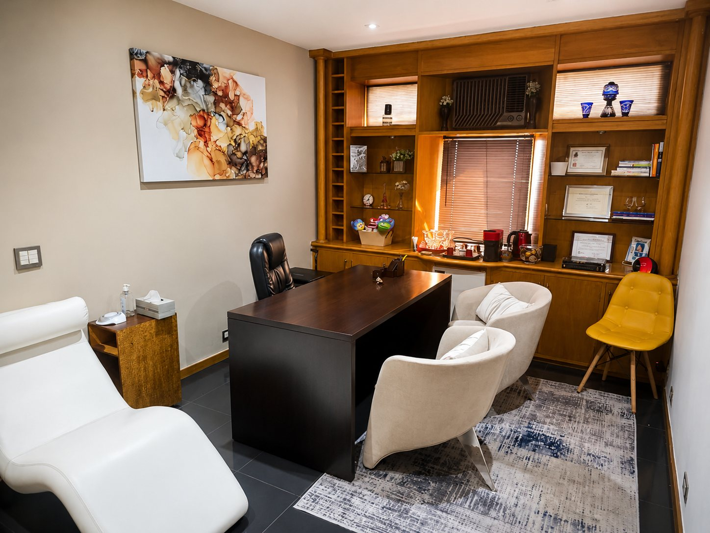

Alimentação
Repor os nutrientes consumidos nos períodos de stress e sustentar o corpo na recuperação.
Há mais de duas décadas, o Centro de Controle de Stress-SP devolve qualidade de vida a adultos, crianças, famílias e empresas — com atendimento presencial em São Paulo e online.

O CPCS-SP nasceu do trabalho pioneiro da Prof. Dra. Marilda Lipp, referência internacional na pesquisa do stress e criadora do Treino de Controle do Stress (TCS), método com eficácia comprovada em estudos científicos.
Nossa equipe de psicólogos especializados atende com protocolos estruturados, metas claras e resultados mensuráveis — sempre unindo rigor científico e acolhimento humano.
O Treino de Controle do Stress atua sobre corpo e mente ao mesmo tempo — porque o stress não escolhe apenas um deles.
Repor os nutrientes consumidos nos períodos de stress e sustentar o corpo na recuperação.
Técnicas de respiração e relaxamento profundo para reduzir a tensão física e mental.
Mais vigor e resistência, menos cansaço crônico: o movimento como aliado do equilíbrio.
Reestruturação cognitiva: mudar o modo estressante de pensar, sentir e agir, com técnicas da terapia cognitivo-comportamental.
Um programa estruturado, com começo, meio e fim: avaliação do nível de stress, treino das quatro áreas e consolidação de hábitos que permanecem para a vida.
Cheguei com crises de ansiedade que atrapalhavam meu trabalho e meu sono. Em poucas semanas de TCS, entendi meus gatilhos e hoje tenho ferramentas que uso todos os dias. Foi transformador.
O acompanhamento durante a gestação fez toda a diferença. Aprendi a respirar, a desacelerar e a viver esse momento com presença, em vez de medo. Sou muito grata à equipe.
Levamos o check-up de stress para nossa empresa e o resultado surpreendeu: equipes mais leves, menos afastamentos e conversas que antes não aconteciam. Recomendo demais.
* Depoimentos ilustrativos, criados para preservar o sigilo e a privacidade dos pacientes.
Agende uma avaliação com nossa equipe — presencial no Jardim Paulistano ou online.